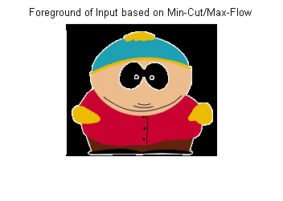
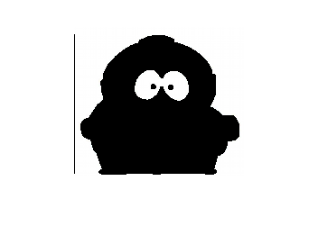
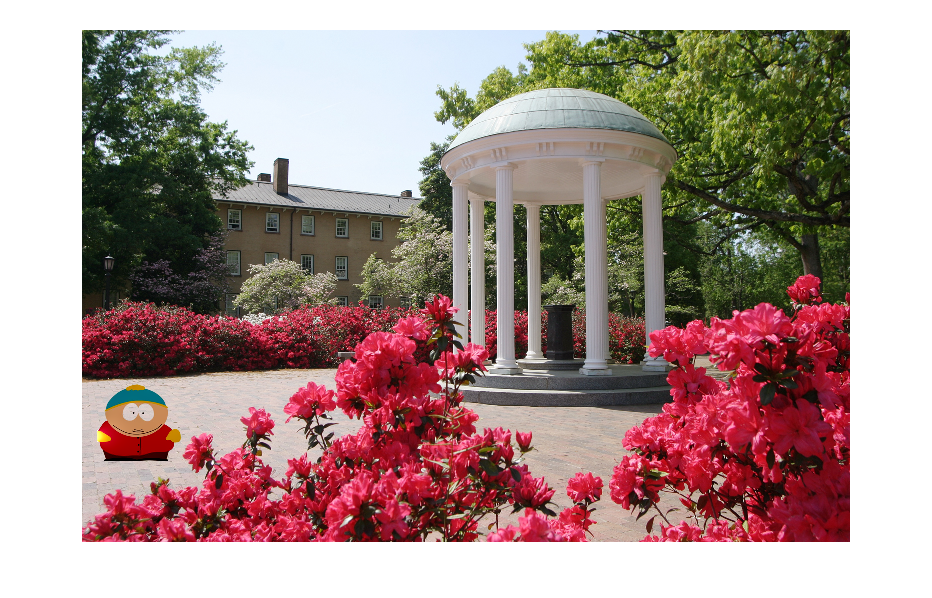

img_filename = './images/cartman.jpg';
mask_filename = './masks/cartmanMask.mat';
img = imread(img_filename);
img2 = img;
img2 = im2double(img2);
gaussFilter = fspecial('gaussian',[5 5], 200);
img = imfilter(img, gaussFilter, 'replicate');
img = imresize(img, .55);
img2 = imresize(img2, .55);
img = im2double(img);
importfile(mask_filename);
mask = cartmanMask;
mask = imresize(mask, .55);
[imh,imw,channels] = size(img);
[maskh, maskw, mask_channels] = size(mask);
assert(imh == maskh);
assert(imw == maskw);
addpath('./maxflow');
if channels == 3
errMessage = 'no Error';
elseif channels == 1
img = cat(3, img, img, img);
else
errMessage = 'Invalid input: Image must be in RGB (triple-channel) or trueColor format'
break
end
if size(mask, 3) == 3
errMessage = 'no Error';
elseif size(mask,3) == 1
mask = mask(:, :, 1);
end
[foreground, background, intervals] = createHistograms(img, mask);
[A,T] = buildGraphs(foreground, background, intervals, img);
T = sparse(T);
[~, newMask] = maxflow(A,T);
newMask = logical(reshape(newMask,imh,imw));
newMask = cat(3,newMask,newMask,newMask);
foreground_img = img2.*~newMask;
background_img = img2.*newMask;
figure
imshow(foreground_img)
hold on
title('Foreground of Input based on Min-Cut/Max-Flow');
figure
title('Background of Input based on Min-Cut/Max-Flow');
imshow(background_img);
newMask = ~newMask;
destination = imread('oldWell.jpg');
destination = 1*im2double(destination);
destination = imresize(destination, .5);
offsetY = 30;
offsetX = 700;
[paddedIMG, paddedMASK] = padToFit(img2(:,15:end,:), newMask(:,15:end,:), destination,[offsetX,offsetY]);
final = zeros(size(destination));
figure
imshow(poissonBlend(paddedIMG,paddedMASK,destination))
Warning: Image is too big to fit on screen;
displaying at 50%
  